Consistent Hashing Explained
Distributed Hashing Technique
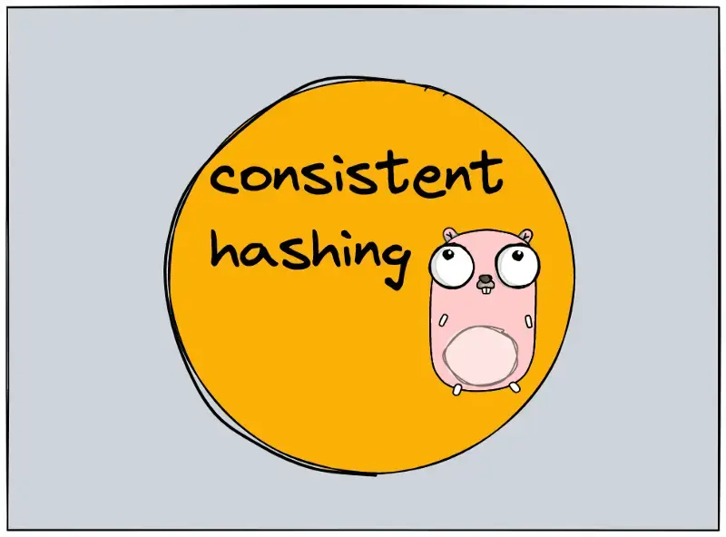
The target audience for this article falls into the following roles:
- Tech workers
- Students
- Engineering managers
The prerequisite to reading this article is fundamental knowledge of system design components. This article does not cover an in-depth guide on individual system design components.
Disclaimer: The system design questions are subjective. This article is written based on the research I have done on the topic and might differ from real-world implementations. Feel free to share your feedback and ask questions in the comments.
Consistent hashing is used in the system design of distributed systems such as the URL shortener, and Pastebin. I highly recommend reading the related articles to improve your system design skills.
Download my system design playbook for free on newsletter signup:
How does consistent hashing work?
At a high level, consistent hashing performs the following operations:
- The output of the hash function is placed on a virtual ring structure (known as the hash ring)
- The hashed IP addresses of the nodes are used to assign a position for the nodes on the hash ring
- The key of a data object is hashed using the same hash function to find the position of the key on the hash ring
- The hash ring is traversed in the clockwise direction starting from the position of the key until a node is found
- The data object is stored or retrieved from the node that was found
Terminology
The following terminology might be useful for you:
- Node: a server that provides functionality to other services
- Hash function: a mathematical function used to map data of arbitrary size to fixed-size values
- Data partitioning: a technique of distributing data across multiple nodes to improve the performance and scalability of the system
- Data replication: a technique of storing multiple copies of the same data on different nodes to improve the availability and durability of the system
- Hotspot: A performance-degraded node in a distributed system due to a large share of data storage and a high volume of retrieval or storage requests
- Gossip protocol: peer-to-peer communication technique used by nodes to periodically exchange state information
Requirements
Functional Requirements
- Design an algorithm to horizontally scale the cache servers
- The algorithm must minimize the occurrence of hot spots in the network
- The algorithm must be able to handle internet-scale dynamic load
- The algorithm must reuse existing network protocols such as TCP/IP
Non-Functional Requirements
- Scalable
- High availability
- Low latency
- Reliable
Introduction
A website can become extremely popular in a relatively short time frame. The increased load might swamp and degrade the performance of the website. The cache server is used to improve the latency and reduce the load on the system. The cache servers must scale to meet the dynamic demand as a fixed collection of cache servers will not be able to handle the dynamic load. In addition, the occurrence of multiple cache misses might swamp the origin server.
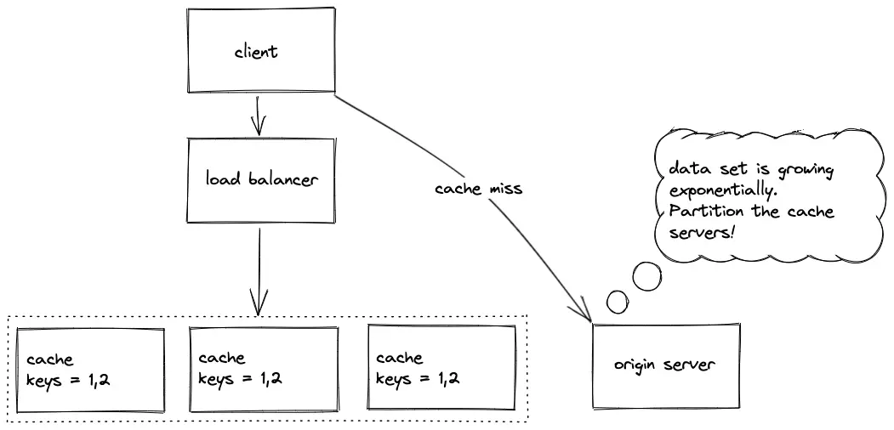
The replication of the cache improves the availability of the system. However, replication of the cache does not solve the dynamic load problem as only a limited data set can be cached1. The tradeoffs of the cache replication approach are the following:
- only a limited data set is cached
- consistency between cache replicas is expensive to maintain
The spread is the number of cache servers holding the same key-value pair (data object). The load is the number of distinct data objects assigned to a cache server. The optimal configuration for the high performance of a cache server is to keep the spread and the load at a minimum2.
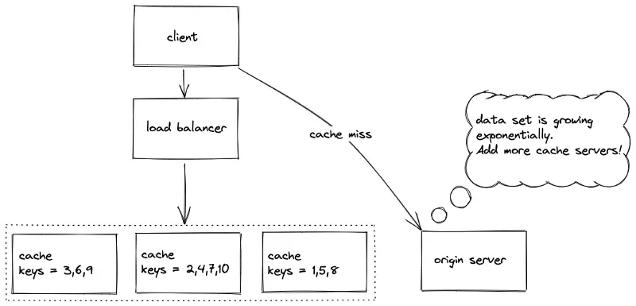
The data set must be partitioned (shard) among multiple cache servers (nodes) to horizontally scale. The replication and partitioning of nodes are orthogonal to each other. Multiple data partitions are stored on a single node for improved fault tolerance and increased throughput. The reasons for partitioning are the following1:
- a cache server is memory bound
- increased throughput
Partitioning
The data set is partitioned among multiple nodes to horizontally scale out. The different techniques for partitioning the cache servers are the following1:
- Random assignment
- Single global cache
- Key range partitioning
- Static hash partitioning
- Consistent hashing
Random assignment
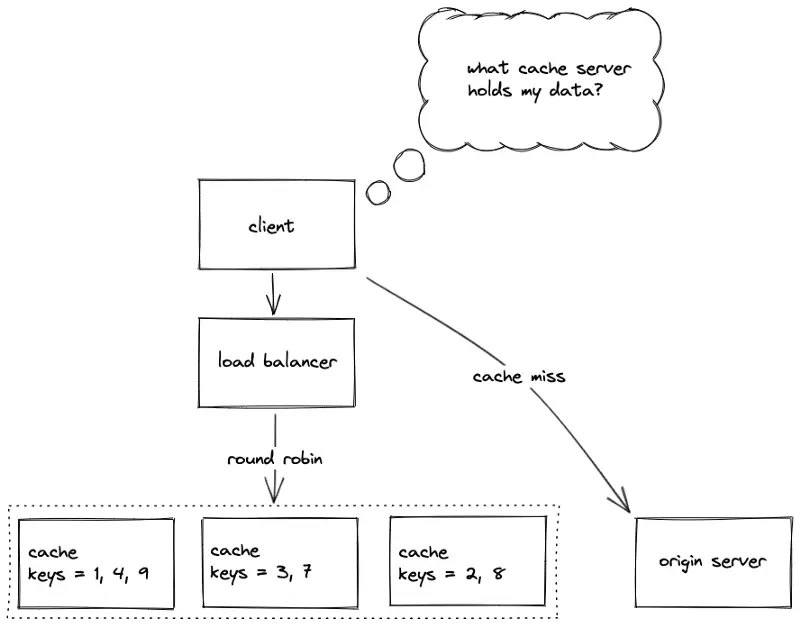
The server distributes the data objects randomly across the cache servers. The random assignment of a large data set results in a relatively uniform distribution of data. However, the client cannot easily identify the node to retrieve the data due to random distribution. In conclusion, the random assignment solution will not scale to handle the dynamic load.
Single global cache
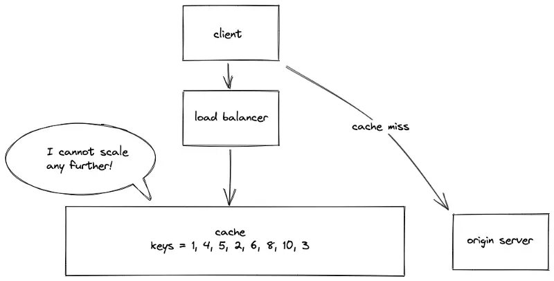
The server stores the whole data set on a single global cache server. The data objects are easily retrieved by the client at the expense of degraded performance and decreased availability of the system. In conclusion, the single global cache solution will not scale to handle the dynamic load.
Key range partitioning
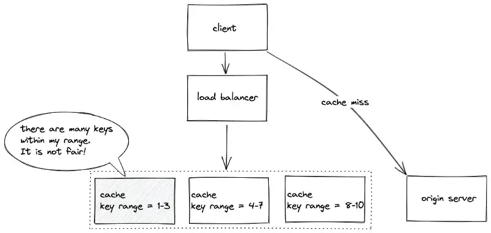
The cache servers are partitioned using the key range of the data set. The client can easily retrieve the data from cache servers. The data set is not necessarily uniformly distributed among the cache servers as there might be more keys in a certain key range. In conclusion, the key range partitioning solution will not scale to handle the dynamic load.
Static hash partitioning
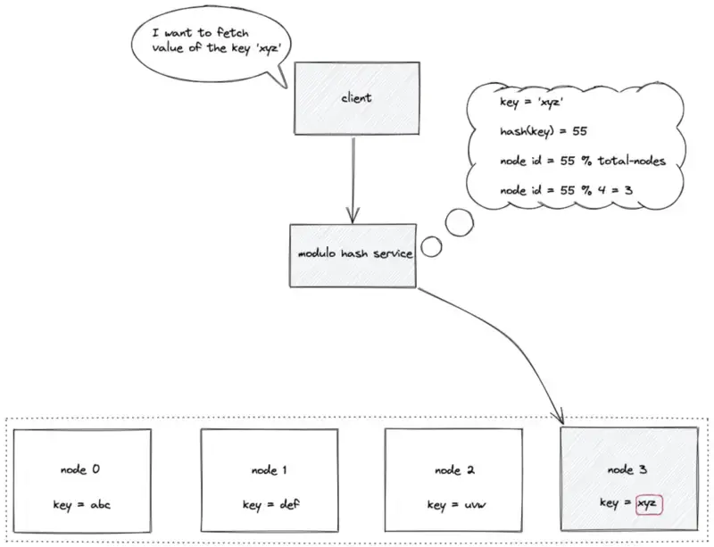
The identifiers (internet protocol address or domain name) of the nodes are placed on an array of length N. The modulo hash service computes the hash of the data key and executes a modulo N operation to locate the array index (node identifier) to store or retrieve a key. The time complexity to locate a node identifier (ID) in static hash partitioning is constant O(1).
node ID = hash(key) mod N
where N is the array’s length and the key is the key of the data object.
A collision occurs when multiple nodes are assigned to the same position on the array. The techniques to resolve a collision are open addressing and chaining. The occurrence of a collision degrades the time complexity of the cache nodes.
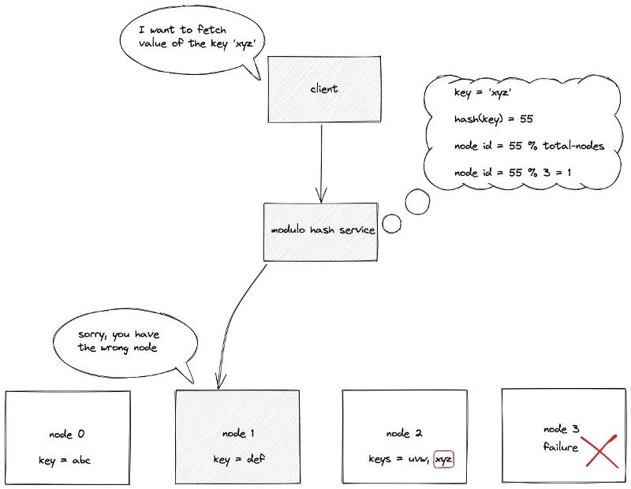
The static hash partitioning is not horizontally scalable. The removal of a node (due to a server crash) breaks the existing mappings between the keys and nodes. The keys must be rehashed to restore mapping between keys and nodes3.
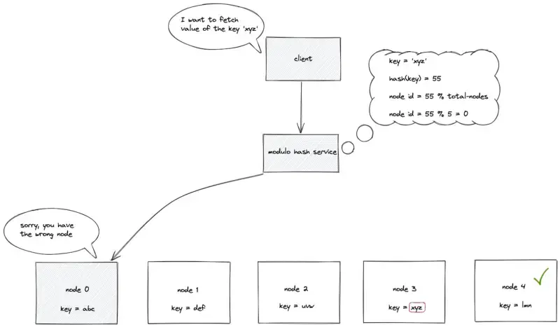
New nodes must be provisioned to handle the increasing load. The addition of a node breaks the existing mappings between the keys and nodes. The following are the drawbacks of static hash partitioning:
- nodes will not horizontally scale to handle the dynamic load
- the addition or removal of a node breaks the mapping between keys and nodes
- massive data movement when the number of nodes changes
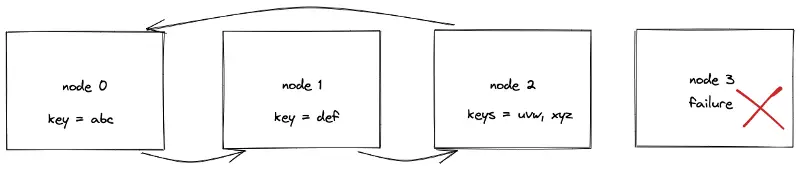
In conclusion, the data set must be rehashed or moved between nodes when the number of nodes changes. The majority of the requests in the meantime will result in cache misses. The requests are delegated to the origin server on cache misses. The heavy load on the origin server might swamp and degrade the service3.
Further system design learning resources
Download my system design playbook for free on newsletter signup:
Consistent hashing
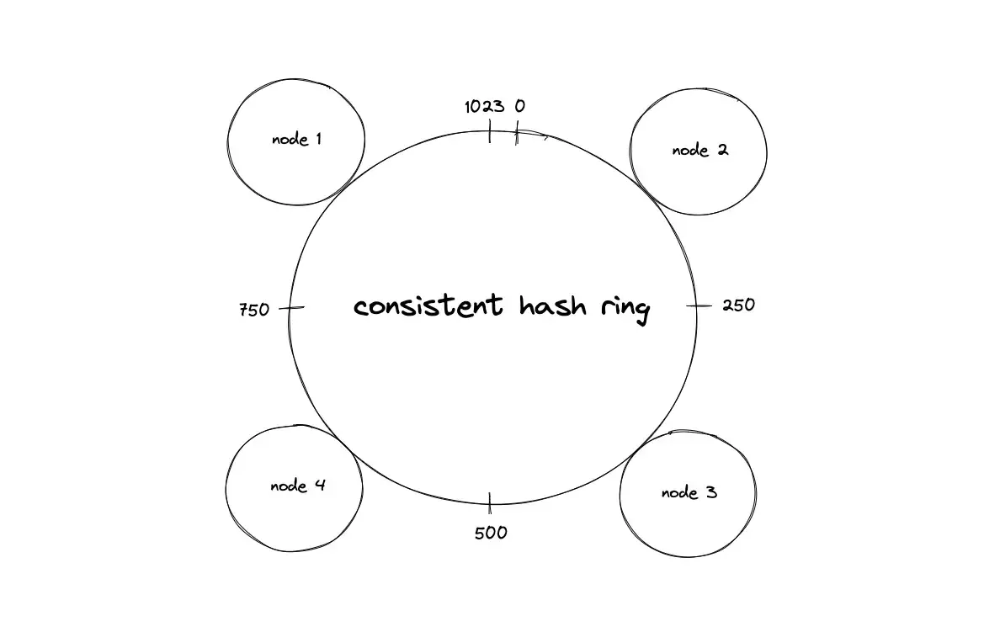
Consistent hashing is a distributed systems technique that operates by assigning the data objects and nodes a position on a virtual ring structure (hash ring). Consistent hashing minimizes the number of keys to be remapped when the total number of nodes changes4.
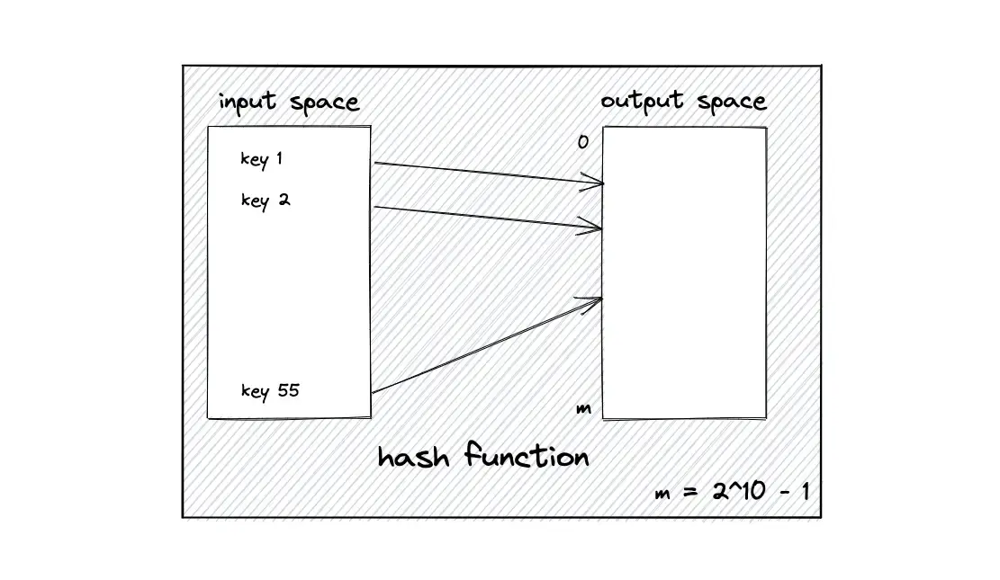
The basic gist behind the consistent hashing algorithm is to hash both node identifiers and data keys using the same hash function. A uniform and independent hashing function such as message-digest 5 (MD5) is used to find the position of the nodes and keys (data objects) on the hash ring. The output range of the hash function must be of reasonable size to prevent collisions.
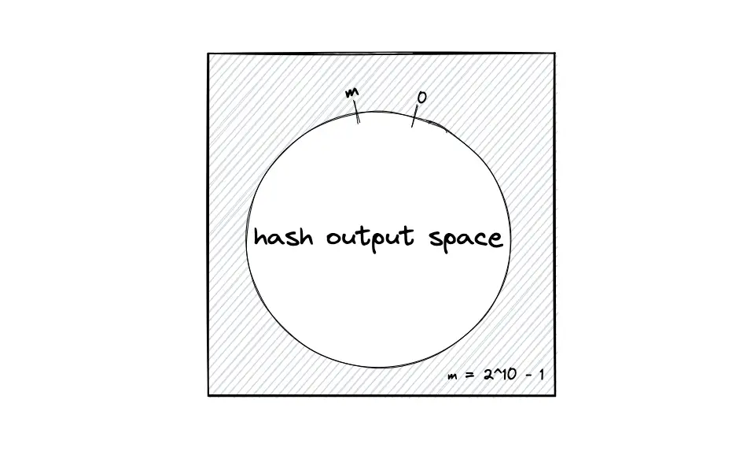
The output space of the hash function is treated as a fixed circular space to form the hash ring. The largest hash value wraps around the smallest hash value. The hash ring is considered to have a finite number of positions5.
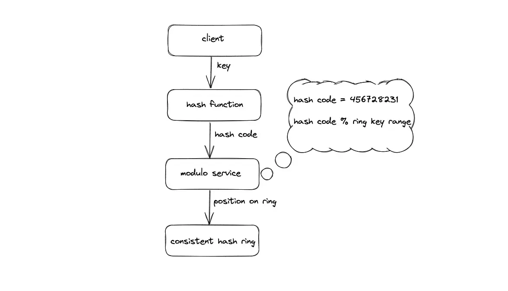
The following operations are executed to locate the position of a node on the hash ring4:
- Hash the internet protocol (IP) address or domain name of the node using a hash function
- The hash code is base converted
- Modulo the hash code with the total number of available positions on the hash ring
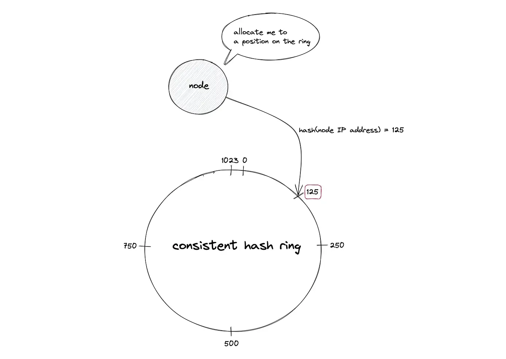
Suppose the hash function produces an output space size of 10 bits (2¹⁰ = 1024), the hash ring formed is a virtual circle with a number range starting from 0 to 1023. The hashed value of the IP address of a node is used to assign a location for the node on the hash ring.
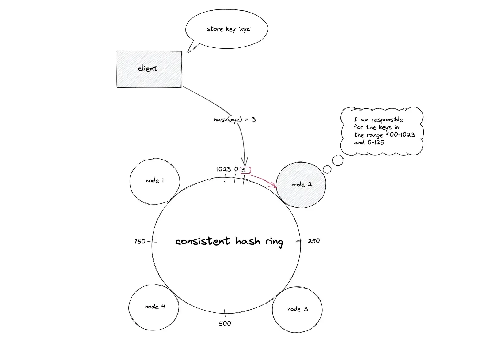
The key of the data object is hashed using the same hash function to locate the position of the key on the hash ring. The hash ring is traversed in the clockwise direction starting from the position of the key until a node is found. The data object is stored on the node that was found. In simple words, the first node with a position value greater than the position of the key stores the data object6.
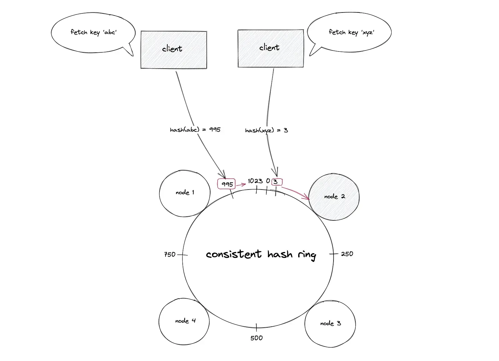
The key of the data object is hashed using the same hash function to locate the position of the key on the hash ring. The hash ring is traversed in the clockwise direction starting from the position of the key until a node is found. The data object is retrieved from the node that was found. In simple words, the first node with a position value greater than the position of the key must hold the data object.
Each node is responsible for the region on the ring between the node and its predecessor node on the hash ring. The origin server must be queried on a cache miss. In conclusion, the following operations are performed for consistent hashing7:
- The output of the hash function such as MD5 is placed on the hash ring
- The IP address of the nodes is hashed to find the position of the nodes on the hash ring
- The key of the data object is hashed using the same hash function to locate the position of the key on the hash ring
- Traverse the hash ring in the clockwise direction starting from the position of the key until the next node to identify the correct node to store or retrieve the data object
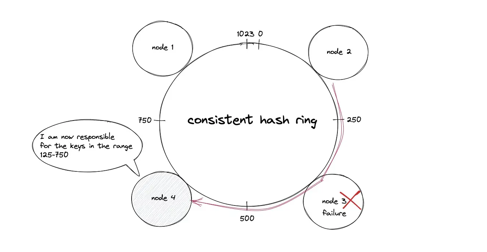
The failure (crash) of a node results in the movement of data objects from the failed node to the immediate neighboring node in the clockwise direction. The remaining nodes on the hash ring are unaffected5.
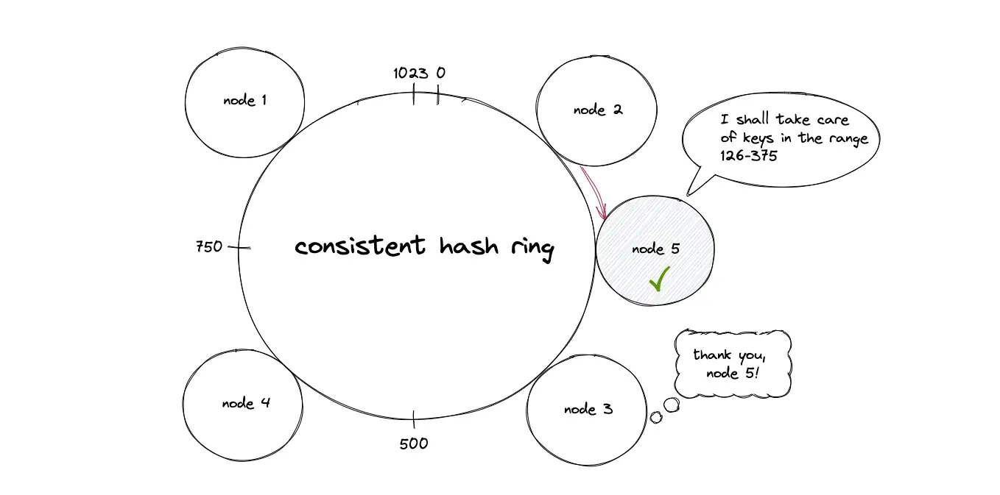
When a new node is provisioned and added to the hash ring, the keys (data objects) that fall within the range of the new node are moved out from the immediate neighboring node in the clockwise direction.
Average number of keys stored on a node = k/N
where k is the total number of keys (data objects) and N is the number of nodes.
The deletion or addition of a node results in the movement of an average number of keys stored on a single node. Consistent hashing aid cloud computing by minimizing the movement of data when the total number of nodes changes due to dynamic load8.
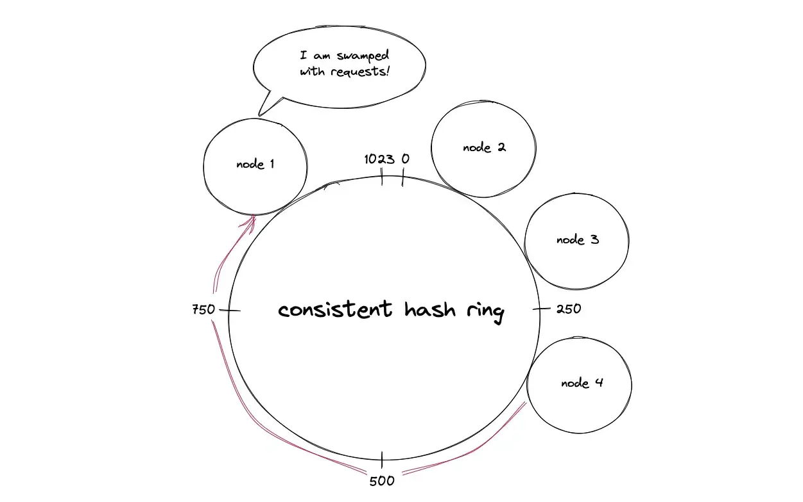
There is a chance that nodes are not uniformly distributed on the consistent hash ring. The nodes that receive a huge amount of traffic become hot spots resulting in cascading failure of the nodes.
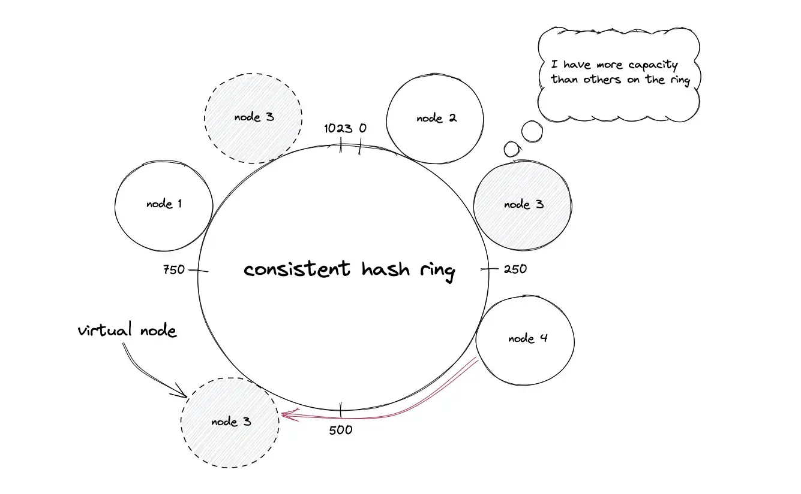
The nodes are assigned to multiple positions on the hash ring by hashing the node IDs through distinct hash functions to ensure uniform distribution of keys among the nodes. The technique of assigning multiple positions to a node is known as a virtual node. The virtual nodes improve the load balancing of the system and prevent hot spots. The number of positions for a node is decided by the heterogeneity of the node. In other words, the nodes with a higher capacity are assigned more positions on the hash ring5.
The data objects can be replicated on adjacent nodes to minimize the data movement when a node crashes or when a node is added to the hash ring. In conclusion, consistent hashing resolves the problem of dynamic load.
Further system design learning resources
Download my system design playbook for free on newsletter signup:
Consistent hashing implementation
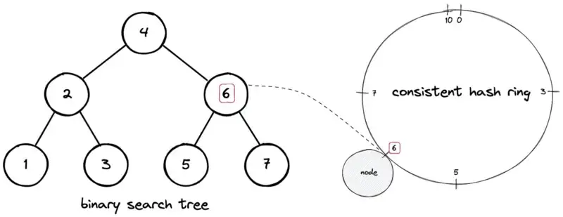
The self-balancing binary search tree (BST) data structure is used to store the positions of the nodes on the hash ring. The BST offers logarithmic O(log n) time complexity for search, insert, and delete operations. The keys of the BST contain the positions of the nodes on the hash ring.
The BST data structure is stored on a centralized highly available service. As an alternative, the BST data structure is stored on each node, and the state information between the nodes is synchronized through the gossip protocol7.
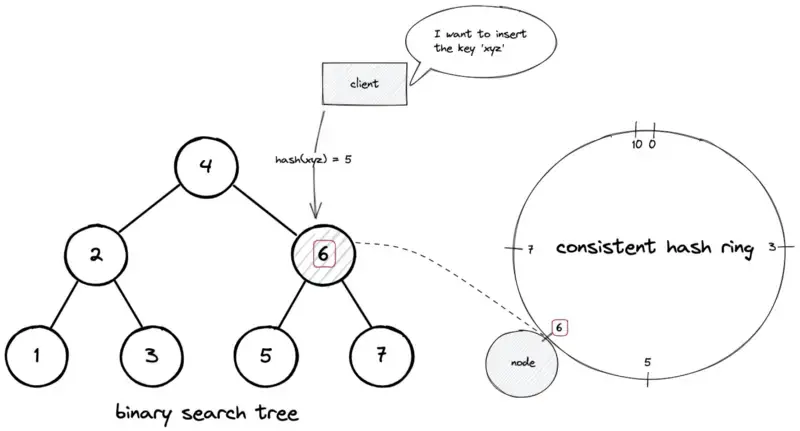
In the diagram, suppose the hash of an arbitrary key ‘xyz’ yields the hash code output 5. The successor BST node is 6 and the data object with the key ‘xyz’ is stored on the node that is at position 6. In general, the following operations are executed to insert a key (data object):
- Hash the key of the data object
- Search the BST in logarithmic time to find the BST node immediately greater than the hashed output
- Store the data object in the successor node
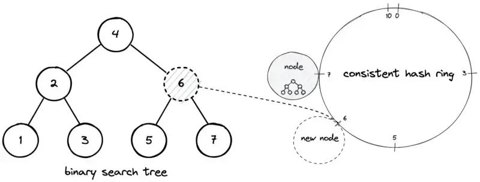
The insertion of a new node results in the movement of data objects that fall within the range of the new node from the successor node. Each node might store an internal or an external BST to track the keys allocated in the node. The following operations are executed to insert a node on the hash ring:
- Insert the hash of the node ID in BST in logarithmic time
- Identify the keys that fall within the subrange of the new node from the successor node on BST
- Move the keys to the new node
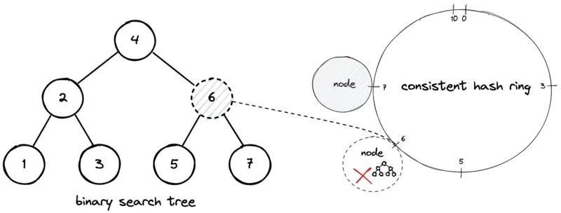
The deletion of a node results in the movement of data objects that fall within the range of the decommissioned node to the successor node. An additional external BST can be used to track the keys allocated in the node. The following operations are executed to delete a node on the hash ring:
- Delete the hash of the decommissioned node ID in BST in logarithmic time
- Identify the keys that fall within the range of the decommissioned node
- Move the keys to the successor node
What is the asymptotic complexity of consistent hashing?
The asymptotic complexity of consistent hashing operations are the following:
| Operation | Time Complexity | Description |
|---|---|---|
| Add a node | O(k/n + logn) | O(k/n) for redistribution of keys O(logn) for binary search tree traversal |
| Remove a node | O(k/n + logn) | O(k/n) for redistribution of keys O(logn) for binary search tree traversal |
| Add a key | O(logn) | O(logn) for binary search tree traversal |
| Remove a key | O(logn) | O(logn) for binary search tree traversal |
where k = total number of keys, n = total number of nodes 2, 7.
How to handle concurrency in consistent hashing?
The BST that stores the positions of the nodes is a mutable data structure that must be synchronized when multiple nodes are added or removed at the same time on the hash ring. The readers-writer lock is used to synchronize BST at the expense of a slight increase in latency.
What hash functions are used in consistent hashing?
An optimal hash function for consistent hashing must be fast and produce uniform output. The cryptographic hash functions such as MD5, and the secure hash algorithms SHA-1 and SHA-256 are not relatively fast. MurmurHash is a relatively cheaper hash function. The non-cryptographic hash functions like xxHash, MetroHash, or SipHash1–3 are other potential candidates6.
What are the benefits of consistent hashing?
The following are the advantages of consistent hashing3:
- horizontally scalable
- minimized data movement when the number of nodes changes
- quick replication and partitioning of data
The following are the advantages of virtual nodes5:
- load handled by a node is uniformly distributed across the remaining available nodes during downtime
- the newly provisioned node accepts an equivalent amount of load from the available nodes
- fair distribution of load among heterogenous nodes
What are the drawbacks of consistent hashing?
The following are the disadvantages of consistent hashing5:
- cascading failure due to hot spots
- non-uniform distribution of nodes and data
- oblivious to the heterogeneity in the performance of nodes
The following are the disadvantages of virtual nodes 5, 6, 8:
- when a specific data object becomes extremely popular, consistent hashing will still send all the requests for the popular data object to the same subset of nodes resulting in a degradation of the service
- capacity planning is trickier with virtual nodes
- memory costs and operational complexity increase due to the maintenance of BST
- replication of data objects is challenging due to the additional logic to identify the distinct physical nodes
- downtime of a virtual node affects multiple nodes on the ring
What are the consistent hashing examples?
The discord server (discord space or chat room) is hosted on a set of nodes. The client of the discord chat application identifies the set of nodes that hosts a specific discord server using consistent hashing9.
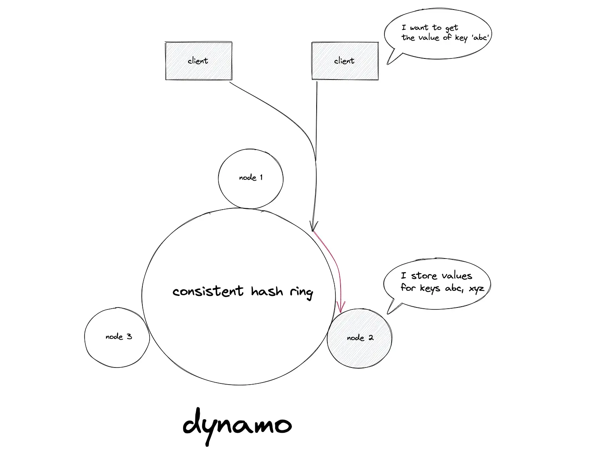
The distributed NoSQL data stores such as Amazon DynamoDB, Apache Cassandra, and Riak use consistent hashing to dynamically partition the data set across the set of nodes. The data is partitioned for incremental scalability5.
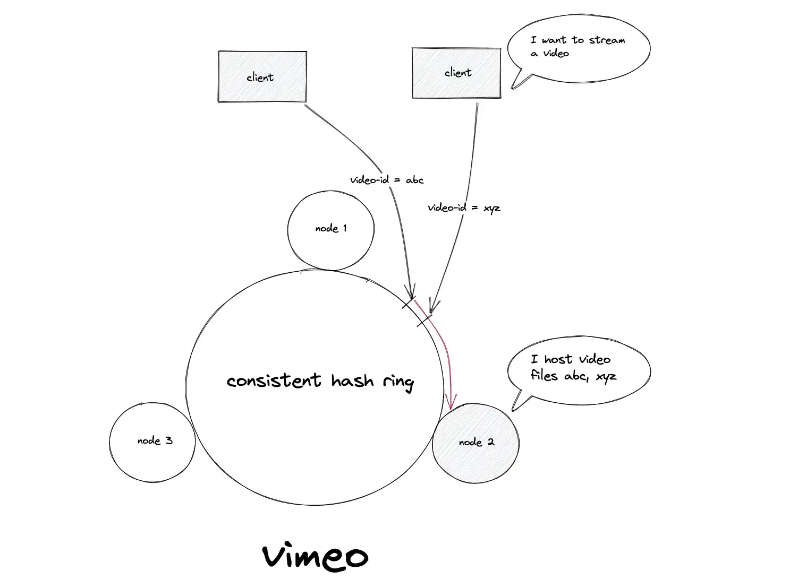
The video storage and streaming service Vimeo uses consistent hashing for load balancing the traffic to stream videos8.
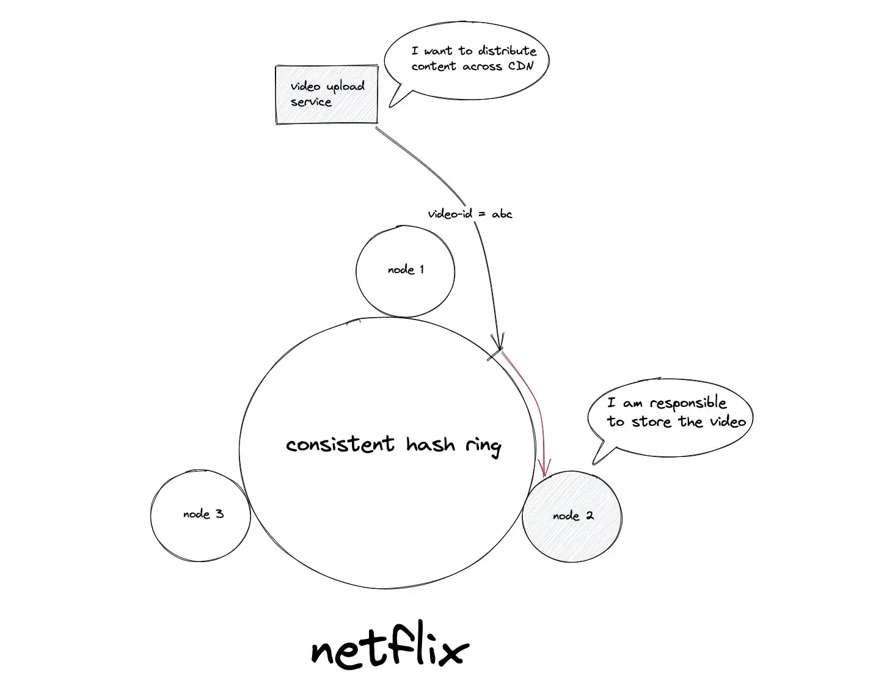
The video streaming service Netflix uses consistent hashing to distribute the uploaded video content across the content delivery network (CDN)10.
Consistent hashing algorithm real-world implementation
The clients of Memcached (Ketama), and Amazon Dynamo support consistent hashing out of the box 3, 11. The HAProxy includes the bounded-load consistent hashing algorithm for load balancing the traffic8. As an alternative, the consistent hashing algorithm can be implemented, in the language of choice.
Consistent hashing optimization
Some of the popular variants of consistent hashing are the following:
- Multi-probe consistent hashing
- Consistent hashing with bounded loads
Multi-probe consistent hashing
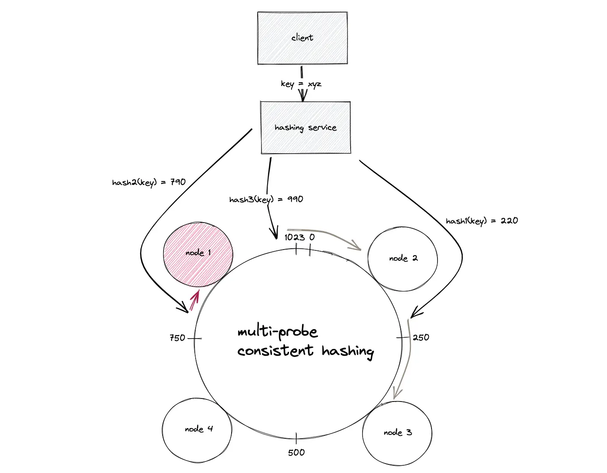
The Multi-probe consistent hashing offers linear O(n) space complexity to store the positions of nodes on the hash ring. There are no virtual nodes but a node is assigned only a single position on the hash ring. The amortized time complexity for the addition and removal of nodes is constant O(1). However, the key (data object) lookups are relatively slower.
The basic gist of multi-probe consistent hashing is to hash the key (data object) multiple times using distinct hash functions on lookup and the closest node in the clockwise direction returns the data object12.
Consistent hashing with bounded loads
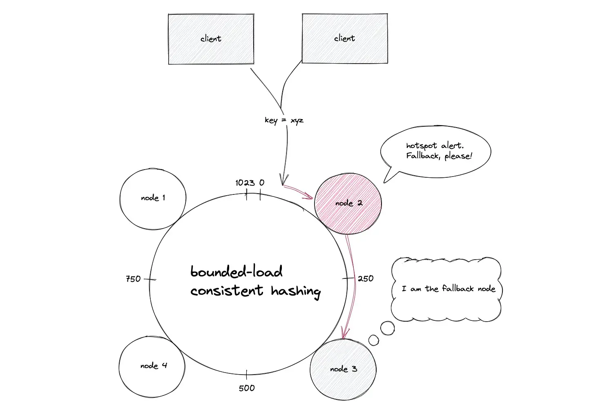
The consistent hashing with bounded load puts an upper limit on the load received by a node on the hash ring, relative to the average load of the whole hash ring. The distribution of requests is the same as consistent hashing as long as the nodes are not overloaded13.
When a specific data object becomes extremely popular, the node hosting the data object receives a significant amount of traffic resulting in the degradation of the service. If a node is overloaded, the incoming request is delegated to a fallback node. The list of fallback nodes will be the same for the same request hash. In simple words, the same node(s) will consistently be the “second choice” for a popular data object. The fallback nodes resolve the popular data object caching problem.
If a node is overloaded, the list of the fallback nodes will usually be different for different request hashes. In other words, the requests to an overloaded node are distributed among the available nodes instead of a single fallback node.
Summary
Consistent hashing is popular among distributed systems. The most common use cases of consistent hashing are data partitioning and load balancing.
What to learn next?
Download my system design playbook for free on newsletter signup:
Questions and Solutions
If you would like to challenge your knowledge on the topic, visit the article: Knowledge Test
License
CC BY-NC-ND 4.0: This license allows reusers to copy and distribute the content in this article in any medium or format in unadapted form only, for noncommercial purposes, and only so long as attribution is given to the creator. The original article must be backlinked.
References
-
Lindsey Kuper, UC Santa Cruz CSE138 (Distributed Systems) Lecture 15: introduction to sharding; consistent hashing (2021), youtube.com ↩︎
-
David Karger, Eric Lehman, Tom Leighton, Rina Panigrahy, Matthew Levine, Daniel Lewin, Consistent Hashing and Random Trees: Distributed Caching Protocols for Relieving Hot Spots on the World Wide Web (1997), GitHub.com ↩︎
-
Tom White, Consistent Hashing (2007), tom-e-white.com ↩︎
-
Srushtika Neelakantam, Consistent hashing explained (2018), ably.com ↩︎
-
Giuseppe DeCandia, Deniz Hastorun, Madan Jampani, Gunavardhan Kakulapati, Avinash Lakshman, Alex Pilchin, Swaminathan Sivasubramanian, Peter Vosshall and Werner Vogels, Dynamo: Amazon’s Highly Available Key-value Store (2007), GitHub.com ↩︎
-
Damian Gryski, Consistent Hashing: Algorithmic Tradeoffs (2018), medium.com ↩︎
-
MIT 6.854 Spring 2016 Lecture 3: Consistent Hashing and Random Trees (2016), mit.edu ↩︎
-
Improving load balancing with a new consistent-hashing algorithm (2016), Vimeo Engineering Blog ↩︎
-
Stanislav Vishnevskiy, How discord scaled elixir to 5,000,000 concurrent users (2017), discord.com ↩︎
-
Mohit Vora, Andrew Berglund, Videsh Sadafal, David Pfitzner, and Ellen Livengood, Distributing Content to Open Connect (2017), netflixtechblog.com ↩︎
-
libketama - a consistent hashing algo for Memcache clients (2007), last.fm ↩︎
-
Ben Appleton, Michael O’Reilly, Multi-Probe Consistent Hashing (2015), arxiv.org ↩︎
-
Vahab Mirrokni, Mikkel Thorup, and Morteza Zadimoghaddam, Consistent Hashing with Bounded Loads (2017), arxiv.org ↩︎